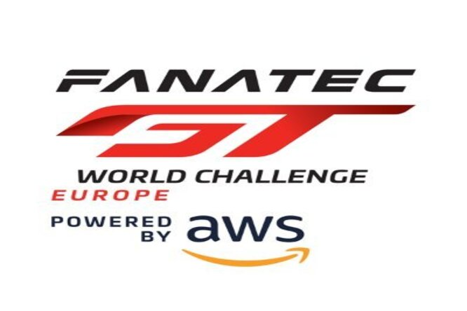

-





| Dia | Descrição | Logo Categoria | Local | Hora | Canal | Logo Canal | Links | Transmissão Internacional | LInks de replay |
|---|---|---|---|---|---|---|---|---|---|
| 10/09 | WRC-Shakedown | |
Chile | 10:00 | Youtube | WRC | |||
| 11/09 | WRC-SS1-SS3 | |
Chile | 08:30 | - |
-
|
|||
| 11/09 | WRC-SS1-SS3 | < |
Chile | 08:30 | - | WRC | Ruguasu | ||
| 11/09 | Baja Aragon-Prologo | < |
Espanha | 11:00 | Youtube | Baja Aragon | |||
| 11/09 | WRC-SS4-SS6 | < |
Chile | 15:00 | - | tr>||||
| 11/09 | Mitsubishi Cup-etapa 4 | < |
- | 19:50 | Youtube | F1BC | |||
| 11\09 | IGTC-1000 KM de Suzuka-PQ |  |
Suzuka | 22:40 | Youtube GP\Youtube GT Word | Grande Premio | GT Word | 12/09 | E1 Series-Qualyfing | |
Luanda-Angola | 08:30 | Youtube\DAZN |
|
| 11\09 | Rally de Rio Negrinho-BR Rally-SS1-Street Stage | |
Rio Negrinho-SC | 19:30 | Jeep Club Rio Negrinho | ||||
| 11\09 | IGTC-1000 KM de Suzuka-PQ | Suzuka | 22:40 | Youtube GP\Youtube GT Word | Grande Premio | GT Word | |||
| 12/09 | E1 Series-Qualyfing | |
Luanda-Angola | 07:30 | Youtube\DAZN |
|
|||
| 12/09 | DTM-race 1 | Sachsenring | 08:30 | ESPN 4 | |
- | - | ||
| 12/09 | Euro RX-Q1-etapa 6 | Lousada | 09:00 | Youtube | - | - | Fia Rallycross | ||
| 30/08 | Euro RX-Semis & final | Loheac | 11:30 | Youtube | Fia Rallycross | ||||
| 30/08 | WRC-SS22 | |
Paraguai | 14:00 | SporTV4 Portugal | - | - | SS22 |